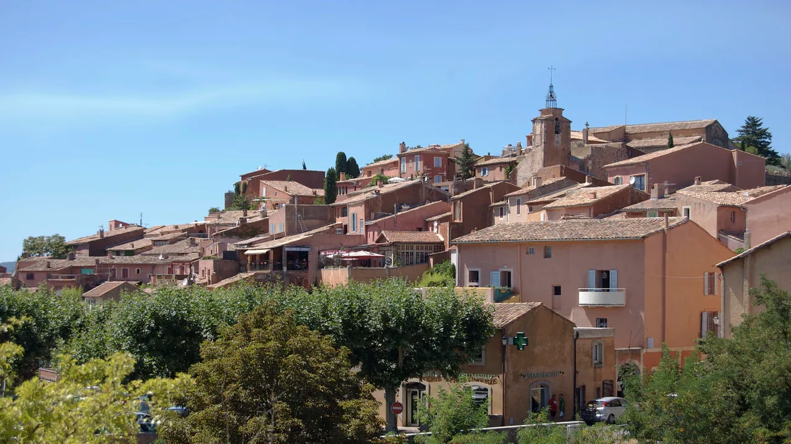
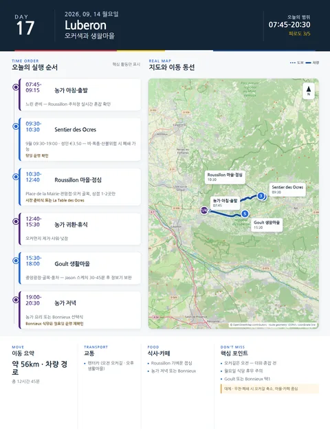

Day 17 · 9/14 월 · Luberon

오늘의 주요 장소

- 핵심 실행
- Roussillon·Goult/Bonnieux
- 권장 출발
- 08:30 출발
- 완충
- 오커길 후 60분 휴식
- 예약
- 이 날짜로 잡힌 예약 없음 · 현황
시간표
| 시간 | 일정 | 실행 포인트 |
|---|---|---|
| 07:45–09:00 | 농가 아침·느린 준비 | 전날 시장 빵·과일·요거트. 정식 운동 생략 |
| 09:15 | 농가 출발 | Roussillon 주차장 실시간 혼잡 확인 |
| 09:30–10:30 | Sentier des Ocres | 9월 09:30–18:30 개방(탐방로 퇴장 19:00), 성인 €3.50 (2026-08-14 확인). 비·폭풍·산불위험 시 폐쇄 가능 |
| 10:30–11:40 | Roussillon 마을 | Place de la Mairie, 전망점, 오커색 골목. 상점은 1–2곳만 |
| 11:45–12:40 | 가벼운 점심 | 시장 준비식 또는 La Table des Ocres·La Cuisine des Huguets 선택 |
| 12:40–14:00 | 농가 귀환·휴식 | 오커먼지 제거, 샤워, 낮잠 |
| 15:30–17:15 | Goult 생활마을 산책 | 중앙광장, 옛 골목, 풍차, 작은 상점. Jason 짧은 스케치 30–45분 |
| 17:15–18:00 | 카페 또는 장보기 보완 | 빵·육류·샐러드·물 보충 |
| 19:00–20:30 | 저녁 선택 | 농가 요리 또는 Bonnieux의 Goût Bistrot·JU 특별식 |
피로도
3/5
이 날의 장소
일자별 시간표와 본문 표기에서 찾은 것이다. 하루의 전부가 아니라 장소 카드가 있는 것만 담는다.
이 날의 메모
Roussillon의 오커와 Goult의 조용한 생활감
- 오늘의 결론: 오커길은 짧지만 계단·먼지·햇빛을 고려한다.
두 코스가 있다면 짧은 코스를 기본으로 한다. 목표는 운동량이 아니라 색의 층, 침식 지형, 마을 벽색과 자연지형의 관계를 보는 것이다.
실행 시간표
오늘 꼭 해볼 것
- 오커길에서는 붉은 지층만 보지 말고 노랑·주황·보라빛의 변화 관찰하기
- 밝은 신발·흰 바지는 피하고, 오커먼지가 묻어도 되는 복장 사용
- Roussillon과 Goult를 비교해 “관광마을”과 “생활마을”의 차이를 느끼기
- Goult에서 상점보다 골목·벽·풍차를 천천히 보기
대안 대책 (우천·휴관·교통 장애)
Goult보다 전망과 식사를 우선하면 오후를 Bonnieux로 바꾼다.
- 높은 마을에서 북쪽 Mont Ventoux 방향 전망
- 교회 주변 오르막은 체력에 따라 축소
- Goût Bistrot: 메뉴 €39 / €49 · 영업 월 12:00–13:30 · 19:00–21:00 · 금–일 영업 · 휴무 수·목
- JU – Maison de Cuisine: 점심 €65 · 상위코스 €95–145 (2차 출처) · 휴무 수요일·목요일 휴무
우천 대체
- 오커길 폐쇄: Roussillon 골목 45분 → ôkhra 관련 실내 프로그램 또는 농가 요리·스케치
- 비가 지속되면 Goult 대신 Apt 장보기·카페
상세 실행 확인
- 최고 리스크
- 월요일 식당·미끄럼
- 우선 삭제
- 오후 마을
- 대체안
- 오커길 축소·카페
- 식사·휴식
- Roussillon 점심
- 잠금 필요
- 오커길
Google 실행지도
Roussillon 오커길과 Goult
지도 펼치기
지도는 펼칠 때만 불러옵니다.
Daily Action Map

실제 좌표와 OpenStreetMap을 사용한 실행용 요약입니다. 도로·대중교통 상황은 출발 직전에 다시 확인하세요.